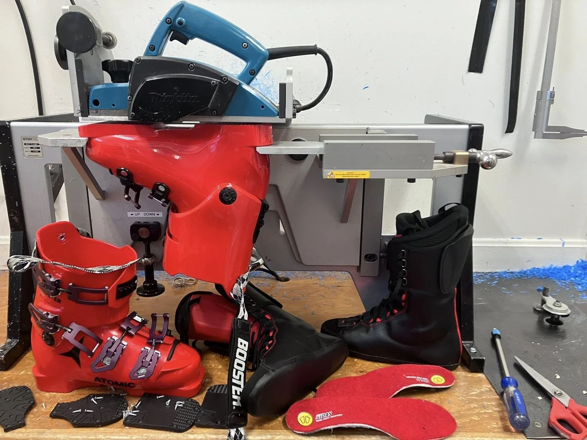

Tunes from $40 to the Full Monty, binding mounting, race prep and the Boot Lab menu, with prices in the open.
Five tune levels from a $40 clean-up to the $99 Full Monty, binding work priced by the job, and a race department with its own menu. Every tune is done by hand on the Montana machines you can see from the service desk. Not sure what you need? Ask your ski tech which tune is right for you.
Ski & board tuning
| Service | Price |
|---|---|
| Bronze tuneQuick clean-up tune before hitting the slopes | $40 |
| Silver tuneRoutine maintenance for the weekend warrior | $60 |
| Gold tuneBeen a while? Skis need a little extra love; brings them back to their former glory | $75 |
| Platinum tuneThe best of the best: highest performance rec tune and the perfect beer-league race tune | $85 |
| The Full MontyThe works: Platinum tune with minor P-tex base welds | $99 |
For core shots and other repairs, ask for a quote. P-tex by the linear inch. A la carte services and add-ons available.
Binding mounting & servicing
Every mount, adjustment and test checks compatibility and forward pressure, sets DIN, and is tested on the Montana Jetbond 2.
| Service | Price |
|---|---|
| Binding mount or re-mount | $100 |
| System binding mounting | $75 |
| Binding adjustment and function test | $50 |
| Service | Price |
|---|---|
| Race mount with purchase | $25 |
| Race binding transfer | $75 |
| Race binding lifter installToe and heel height set to FIS regulation, to the athlete’s, coach’s or race tech’s request | $100 |
 Tune room
Tune roomMontana machines, race-room standards
Every tune is done by hand on the machines you can see from the service desk. Race day tunes get their own line on the menu, and post-season race prep is a specialty: quick turnarounds so you are ready for race day.
Turnaround depends on the season. Holiday weeks run longer, and we say so at drop-off.

Boot LabRace department
| Service | Rodgers ski | Outside ski |
|---|---|---|
| FIS race ski prepShaped sidewalls, World Cup structure, Trione edges, race wax | $200 | $250 |
| USSA race ski prepSidewall pull, World Cup structure, belt edge and base, race wax | ask | $200 |
| Junior race ski prep (U10/U12)Stone grind flat, belt edge angles, one wax cycle | $60 | $75 |
| Race ski grind onlyFlat ski, World Cup structure, no edge bevels | $85 | n/a |
| Race day tuneTrione edges, race wax; sidewall must be cut to qualify, no grind | $65 | $75 |
Full race ski, boot and binding menus, including the Podium Club season tuning, are on the Race page. Boot Lab menu on the Boot Lab page.